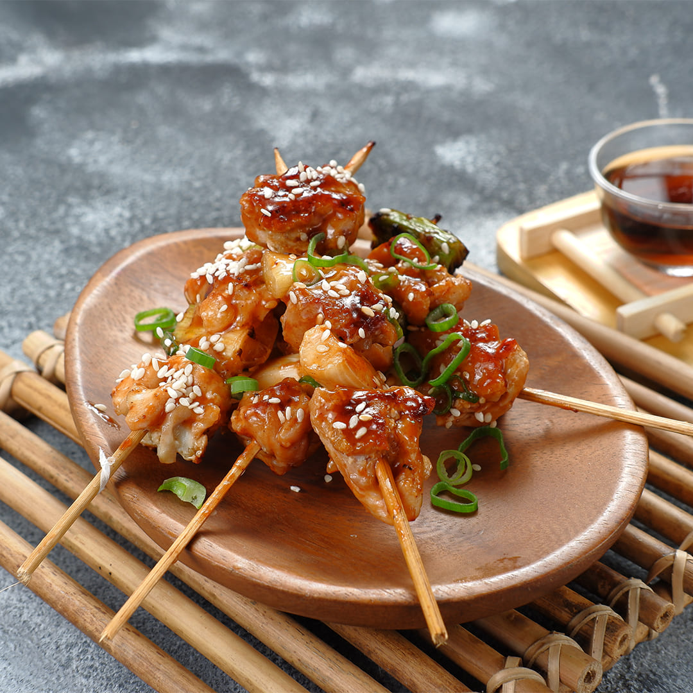

You need for Yakitori
- Soy souce
- Mirin
- Sake
- Brown sugar
- Tokyo negi or green onions
- Boneless, skinless chicken thights
- Oil
- Shichimi togarashi (Japanese seven spice)
Instructions:
- Cut chicken into pieces and place in a shallow dish.
- In a small saucepan, combine soy sauce or tamari, mirin, sake or sherry, brown sugar, garlic and ginger. Bring to a simmer and cook for 7 minutes, until thickened. Reserve 2 tablespoons of sauce for serving. Pour remaining sauce over chicken, cover, and chill for at least one hour (and up to 4 hours).